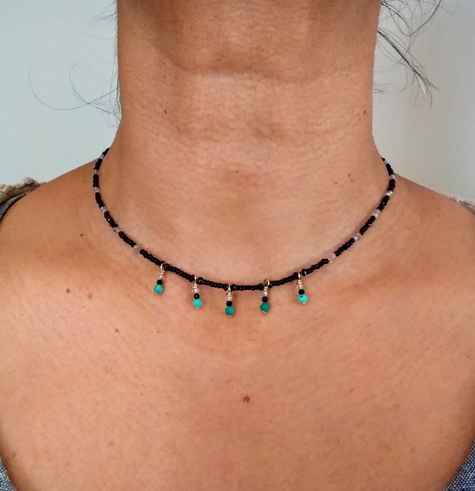

Hello Everyone! I love working with natural stones and making jewelry. I am donating three of my recent creations to raise funds for the musicians who are performing at the April 25 Knoblauch House Concert. Each is made from semi-precious stones and the colours reflect our wondrous NM skies.
(Scroll to see all images; click on images to enlarge)
Item 1. Starting: $35; Highest: $35; Length: 15 inches; Stones: Onyx, spinel, turqoise, labradorite
Item 2. Starting: $35; Highest: $35; Length: 14 inches; Stones: Turqoise, labradorite, amazonite, mother of pearl, pearl, peridot, citrine
Item 3. Starting: $35; Highest: $35; Highest: $35; Length: 16 inches; Stones: Turqoise, labradorite, amazonite, mother of pearl, pearl, peridot, citrine, garnet
Layering 2 and 3 😉
Please use the form below to bid as many times as you like!
Every day until April 24th, I will update the highest bid number below each item. Bidding will close on April 24th (day before the concert) and on April 25th I will send you an email if you are the highest bidder for an item. You will be able to pick up your piece at Susi's house at the concert (or make arrangements with her if you cannot attend). All payment will be due to her directly. Thank you for helping us support the musicians during this difficult time!
{kind=link}
{kind=link}
{kind=link}
{kind=link}